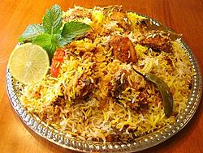
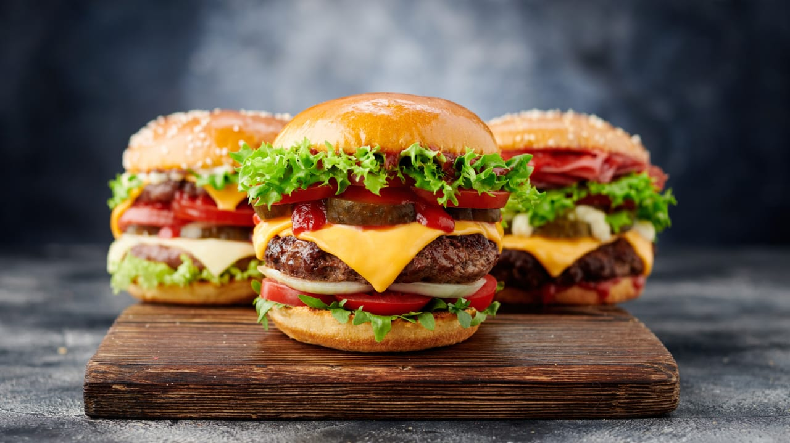
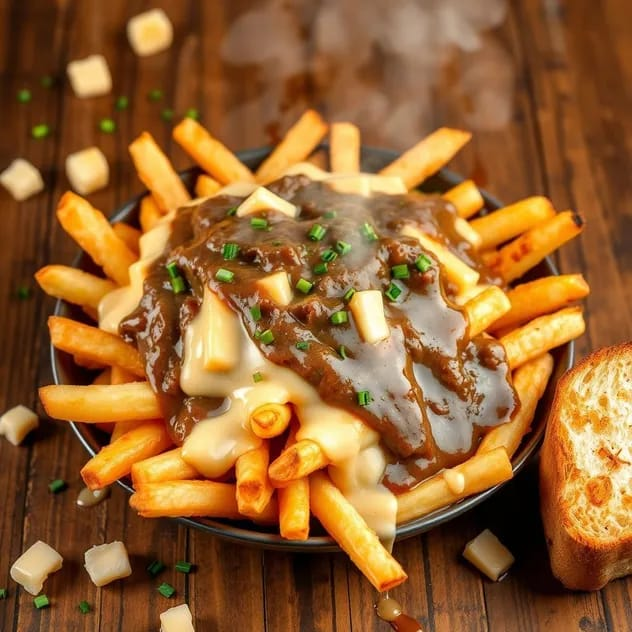
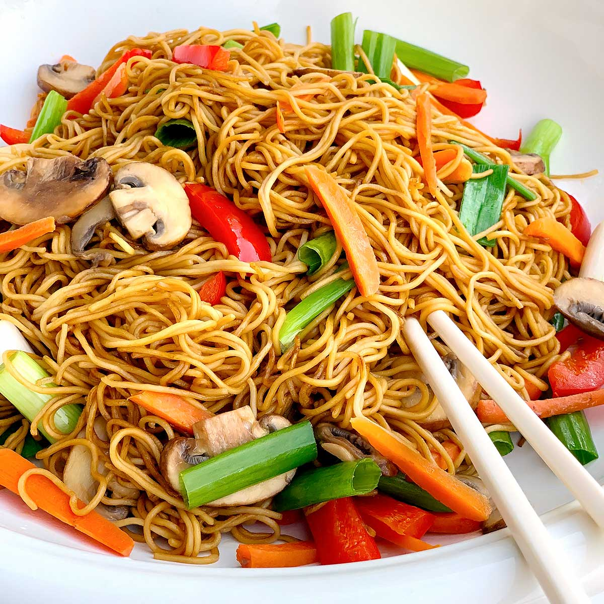

Famous Foods
Explore the tastes of different countries!

Biryani (India)
Biryani is a spiced rice dish from India, layered with meat, vegetables, or both, known for its rich flavors.
Learn more about Biryani
Sushi (Japan)
Sushi is a Japanese delicacy made with raw fish, rice, and seaweed, often served with soy sauce.
Learn more about Sushi
Pizza (Italy)
Pizza is a classic Italian dish with a thin crust, topped with tomato sauce, mozzarella, and various toppings.
Learn more about Pizza

Hamburger (USA)
Hamburger is a classic American favorite, it is a soft bread bun with a meat patty inside and it is served with cheese,tomato and sauces.
Learn more about Burger

Poutine (Canada)
Poutine is canadian comfort food features crispy fries topped with cheese curds and smothered in rich brown gravy.
Learn more about Poutine

Noodles (China)
A staple of Chinese cuisine,noodles are long,soft strips made from wheat or rice flour serverd in soups or stir-fries.
Learn more about NoodlesWant to know more tasty foods?